A modern farmhouse kitchen doesn't require a renovation to get most of the way there.
Some elements genuinely need construction. Most don't, they need paint, hardware, and a few deliberate swaps.
This goes through the look element by element, flagging which is which.

Can This Work Without a Full Renovation?
Paint, hardware, lighting, a backsplash, and styling details cover most of what makes this look recognizable, all achievable without touching plumbing or structural walls.
The sink and flooring are the two items worth saving for an actual renovation; everything else can happen this weekend or over a few weekends.
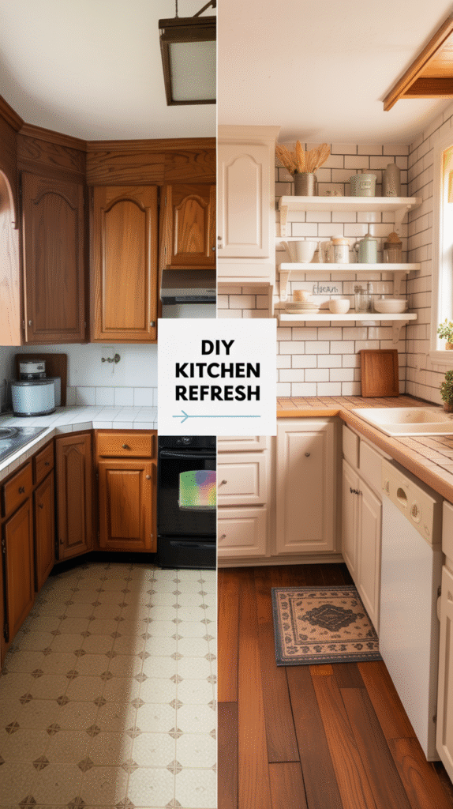
Appliances: Panels Over Replacement
A cabinet-panel-ready appliance front, or simply choosing matte black or stainless over anything too high-tech looking, keeps appliances from fighting the farmhouse look.
Full appliance replacement isn't necessary, the goal is appliances that don't visually compete with everything else already in place.
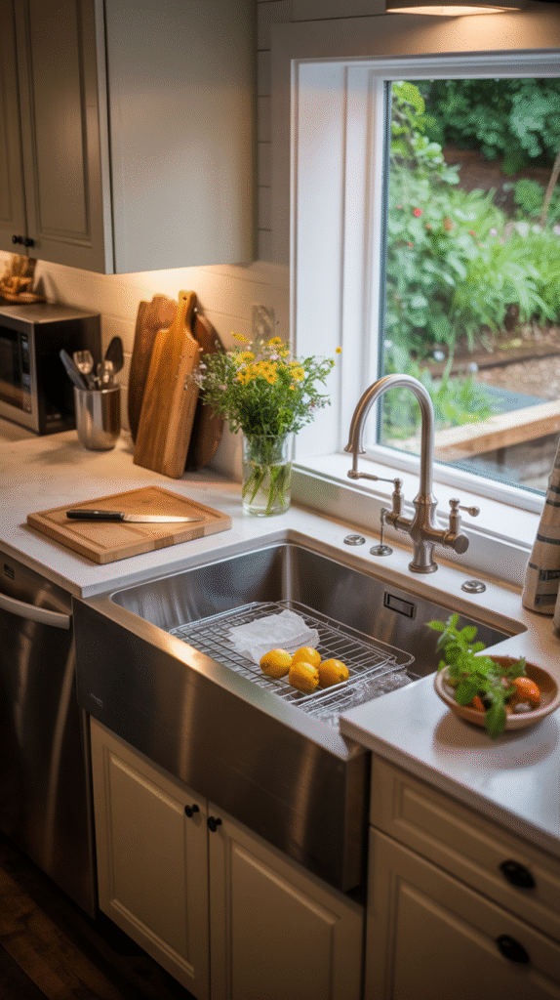
The Small Details That Pull It Together
Open shelving styled with simple dishware, a woven basket, or a vintage-style sign all add farmhouse character without touching a single structural element.
These details are what make the bigger swaps read as a cohesive look rather than a few disconnected changes.
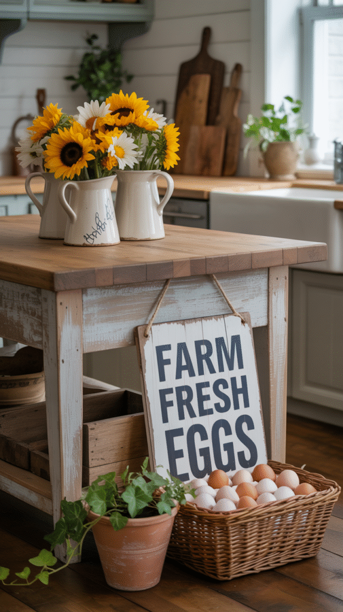
Flooring: The Biggest Commitment
Wide-plank wood or wood-look tile flooring is the most renovation-heavy item on this entire list, requiring real installation work.
A large area rug in the right tone can approximate the grounding effect in the meantime, without touching the actual floor.
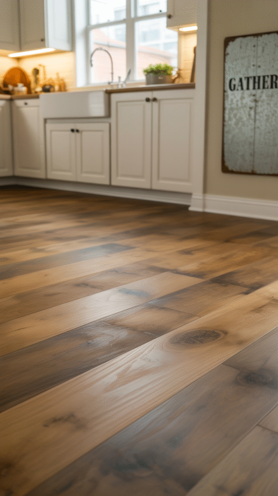
Lighting: An Easy Fixture Swap
A pendant or lantern-style fixture over the island or sink is one of the easiest high-impact swaps on this entire list, no construction, just a fixture change.
This also does double duty for mood, since warm-toned farmhouse lighting changes how the whole room feels at night.
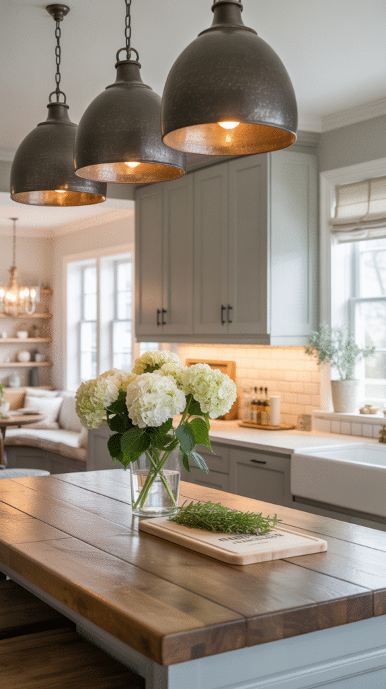
Backsplash: A Weekend Project
Peel-and-stick subway tile or a simple tile backsplash installed over an existing wall is a genuinely approachable weekend project, not a full renovation.
This delivers a surprising amount of visual impact for the relatively low effort involved.
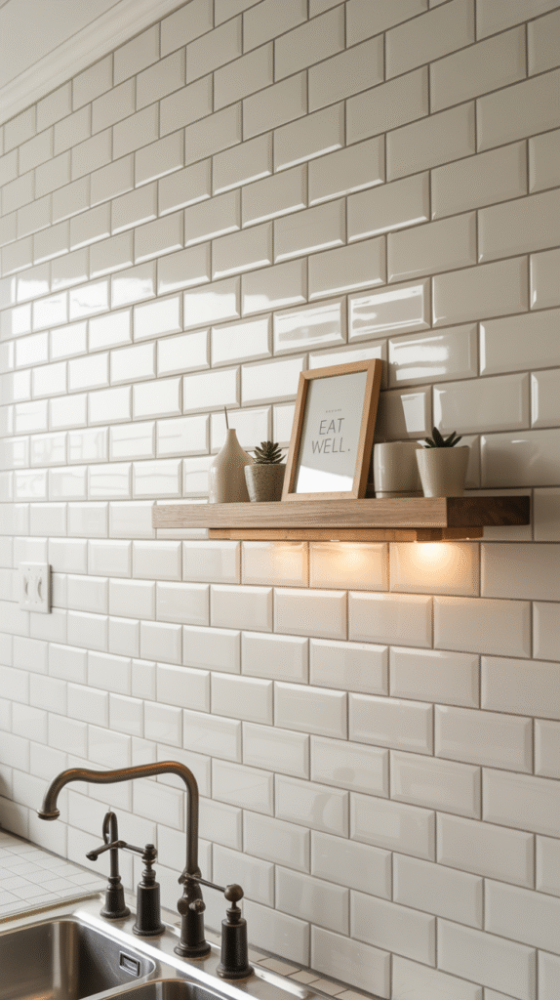
Countertops: Depends on the Budget
A butcher block or soapstone countertop is a bigger investment than paint or hardware, but it's still a surface swap rather than a structural renovation.
This is a reasonable mid-tier project, more involved than a quick weekend fix, less disruptive than a full gut renovation.
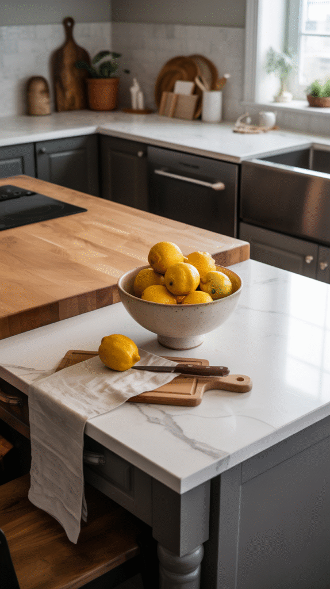
The Sink: A Renovation Item
An apron-front farmhouse sink is one of the few items on this list that genuinely requires plumbing work and a cabinet modification.
Worth planning for eventually, but not a quick-swap item, everything else on this list works around the existing sink in the meantime.
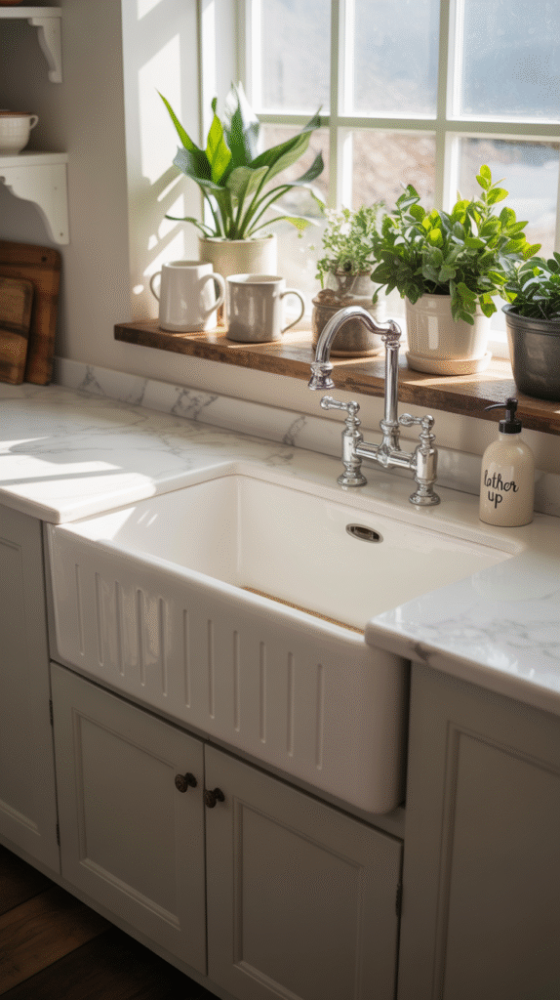
Going Rustic Without Overdoing It
A few reclaimed wood accents, open shelving, a cutting board display, a wood tray, bring in rustic texture without a full material overhaul.
Balance matters here: enough rustic texture to feel farmhouse, not so much it tips into log cabin.
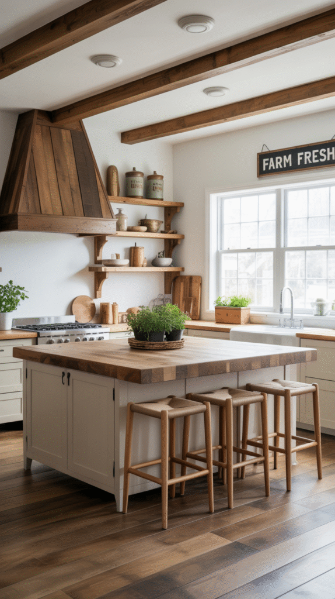
Cabinets and Hardware: Mostly a Swap
Existing cabinet boxes, repainted and fitted with new black or brass hardware, deliver most of the farmhouse cabinet look without replacing a single cabinet.
Full cabinet replacement is the one genuinely renovation-level move here, worth it eventually, but not required to get the look now.
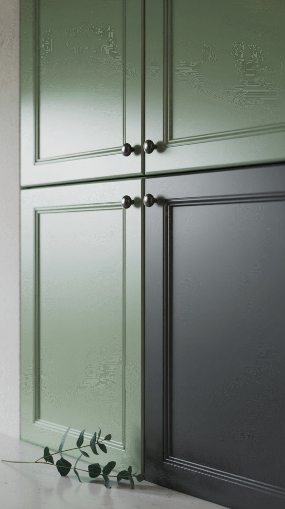
Color: No Construction Required
A warm white or soft greige base, applied to cabinets or walls, is purely a paint job, no contractor needed.
This is the single highest-impact, lowest-cost place to start, and it's worth doing before any other change on this list.
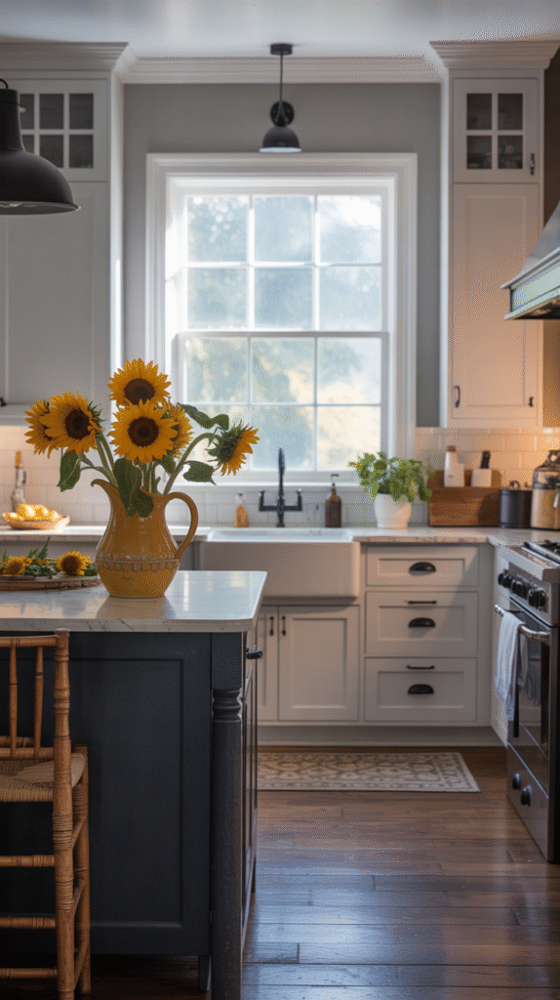
You Don't Need a Farm, Just a Vision
Most of this look genuinely comes down to paint, hardware, and lighting, the cheapest, fastest items on the whole list by far.
Save the sink and flooring for when a real renovation budget exists, and build everything else around them in the meantime.
The full look is genuinely achievable in stages over time, not all at once in a single rushed weekend.